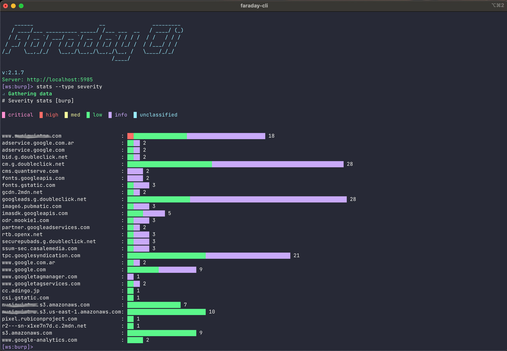

Commands¶
All the commands can be run in Shell Mode or Command Mode
Authentication¶
auth¶
Authenticate with your faraday server.
$ faraday-cli auth
Faraday url [http://localhost:5985]: http://localhost:5985
User: faraday
Password:
Saving config
✔ Authenticated with faraday: http://localhost:5985
| Syntax | Description |
|---|---|
-f/--faraday-url FARADAY_URL |
url of your faraday server |
-i/--ignore-ssl |
Ignore SSL certificate validation |
-i/--ignore-ssl |
Ignore SSL certificate validation |
-u/--user USER |
Faraday user |
-p/--password PASSWORD |
Faraday password |
Faraday token expiration
You may want to change the faraday token expiration time, so you don't have to authenticate so often.
The default is 12 hours.
To do it change de value of api_token_expiration(expressed in seconds) in your faraday server.ini
status¶
Show the status of your current authentication.
$ faraday-cli status
FARADAY SERVER IGNORE SSL VERSION USER VALID TOKEN WORKSPACE
--------------------- ------------ --------- ------- ------------- -----------
http://localhost:5985 False corp-3.14 faraday ✔ test
| Syntax | Description |
|---|---|
-p/--pretty |
Show table in a pretty format |
Workspaces¶
workspace list¶
List workspaces created in faraday.
$ faraday-cli workspace list -p
+--------+---------+------------+---------+----------+----------+------------+
| NAME | HOSTS | SERVICES | VULNS | ACTIVE | PUBLIC | READONLY |
|--------+---------+------------+---------+----------+----------+------------|
| test | 13 | 13 | 39 | True | False | False |
+--------+---------+------------+---------+----------+----------+------------+
Optional Arguments:
| Syntax | Description |
|---|---|
-j/--json-output |
Show output in json |
-p/--pretty |
Show table in a pretty format |
--show-inactive |
Include inactive workspaces |
workspace delete¶
Delete workspace from faraday.
$ faraday-cli workspace delete test
Deleting workspace: test
Deleted workspace: test
Required Arguments:
| Syntax | Description |
|---|---|
WORKSPACE_NAME |
Workspace name |
workspace get¶
Get details of a workspace.
$ faraday-cli workspace get -p test
+--------+----------+----------+------------+---------+------------+---------+
| NAME | ACTIVE | PUBLIC | READONLY | HOSTS | SERVICES | VULNS |
|--------+----------+----------+------------+---------+------------+---------|
| test | True | False | False | 13 | 13 | 39 |
+--------+----------+----------+------------+---------+------------+---------+
Required Arguments:
| Syntax | Description |
|---|---|
WORKSPACE_NAME |
Workspace name |
Optional Arguments:
| Syntax | Description |
|---|---|
-j/--json-output |
Show output in json |
-p/--pretty |
Show table in a pretty format |
workspace select¶
Select your active workspace, unless you use the -w argument all the commands will use this workspace.
$ faraday-cli workspace select test
✔ Selected workspace: test
Required Arguments:
| Syntax | Description |
|---|---|
WORKSPACE_NAME |
Workspace name |
workspace create¶
Create a new workspace in faraday.
$ faraday-cli workspace create test_workspace
✔ Created workspace: test_workspace
Required Arguments:
| Syntax | Description |
|---|---|
WORKSPACE_NAME |
Workspace name |
Optional Arguments:
| Syntax | Description |
|---|---|
-d/--dont-select |
Dont select after create |
workspace dashboard¶
Show a dashboard with different information about the workspaces.
$ faraday-cli workspace dashboard
+--------------+----------------------------+---------------+--------------+------------------------------------------------------------------------------------------------+
| WORKSPACE | INFO | SUMMARY | SEVERITIES | ACTIVITY |
+==============+============================+===============+==============+================================================================================================+
| faraday_test | users: - | hosts: 56 | critical: 0 | Nmap (shell) found 1 hosts, 7 services and 0 vulns (0/0/0/0/0) 2 hours ago by faraday |
| | readonly: False | services: 221 | high: 0 | Openvas (report) found 13 hosts, 13 services and 39 vulns (0/0/13/26/0) 2 hours ago by faraday |
| | public: False | vulns: 52 | med: 13 | agent_firstcan (agent) found 42 hosts, 201 services and 13 vulns (0/0/0/2/11) 3 days ago |
| | updated: 06/17/21 15:45:55 | | low: 28 | |
| | | | info: 11 | |
+--------------+----------------------------+---------------+--------------+------------------------------------------------------------------------------------------------+
Hosts¶
host list¶
List hosts in a workspace.
$ faraday-cli host list -p
+------+------------+---------+-------------+------------+---------+
| ID | IP | OS | HOSTNAMES | SERVICES | VULNS |
|------+------------+---------+-------------+------------+---------|
| 11 | 127.0.0.1 | unknown | | 1 | 3 |
| 3 | 127.0.0.10 | unknown | | 1 | 3 |
| 6 | 127.0.0.11 | unknown | | 1 | 3 |
| 5 | 127.0.0.12 | unknown | | 1 | 3 |
| 7 | 127.0.0.13 | unknown | | 1 | 3 |
| 13 | 127.0.0.2 | unknown | | 1 | 3 |
| 2 | 127.0.0.3 | unknown | | 1 | 3 |
| 9 | 127.0.0.4 | unknown | | 1 | 3 |
| 10 | 127.0.0.5 | unknown | | 1 | 3 |
| 4 | 127.0.0.6 | unknown | | 1 | 3 |
| 8 | 127.0.0.7 | unknown | | 1 | 3 |
| 1 | 127.0.0.8 | unknown | | 1 | 3 |
| 12 | 127.0.0.9 | unknown | | 1 | 3 |
+------+------------+---------+-------------+------------+---------+
Optional Arguments:
| Syntax | Description |
|---|---|
-w WORKSPACE_NAME |
Workspace name |
-p/--pretty |
Show table in a pretty format |
-j/--json-output |
Show output in json |
-ip/--list-ip |
Show ip only |
--port PORT |
Listen in port |
host get¶
Get host information.
$ faraday-cli host get 13 -p
Host:
+------+-----------+---------+-------------+---------+---------+---------+
| ID | IP | OS | HOSTNAMES | OWNER | OWNED | VULNS |
|------+-----------+---------+-------------+---------+---------+---------|
| 13 | 127.0.0.2 | unknown | | faraday | False | 3 |
+------+-----------+---------+-------------+---------+---------+---------+
Services:
+------+--------+---------------+------------+--------+-----------+----------+---------+
| ID | NAME | DESCRIPTION | PROTOCOL | PORT | VERSION | STATUS | VULNS |
|------+--------+---------------+------------+--------+-----------+----------+---------|
| 13 | ssh | | tcp | 22 | unknown | open | 2 |
+------+--------+---------------+------------+--------+-----------+----------+---------+
Vulnerabilities:
+------+------------------------------------------+------------+----------+-------------+---------+
| ID | NAME | SEVERITY | STATUS | CONFIRMED | TOOL |
|------+------------------------------------------+------------+----------+-------------+---------|
| 37 | SSH Weak Encryption Algorithms Supported | MED | opened | False | Openvas |
| 38 | SSH Weak MAC Algorithms Supported | LOW | opened | False | Openvas |
| 39 | TCP timestamps | LOW | opened | False | Openvas |
+------+------------------------------------------+------------+----------+-------------+---------+
Requirement Arguments:
| Syntax | Description |
|---|---|
host_id |
ID of the host |
Optional Arguments:
| Syntax | Description |
|---|---|
-w WORKSPACE_NAME |
Workspace name |
-p/--pretty |
Show table in a pretty format |
-j/--json-output |
Show output in json |
host delete¶
Delete host.
$ faraday-cli host delete 13
Host deleted
Requirement Arguments:
| Syntax | Description |
|---|---|
host_id |
ID of the host |
Optional Arguments:
| Syntax | Description |
|---|---|
-w WORKSPACE_NAME |
Workspace name |
host create¶
Create hosts.
Info
You can pass the host data via stdin.
$ echo '[{"ip": "1.1.1.5", "description": "some text"}]' | faraday-cli host create --stdin
Optional Arguments:
| Syntax | Description |
|---|---|
-w WORKSPACE_NAME |
Workspace name |
-d/--host-data HOST_DATA |
Host data in json format |
--stdin |
Read host-data from stdin |
host data schema:
{'type': 'array', 'items': {'type': 'object', 'properties':
{'ip': {'type': 'string'}, 'description': {'type': 'string'},
'hostnames': {'type': 'array'}}, 'required': ['ip', 'description']}}
Warning
If you pass the host data as an argument it needs to be escaped like this (only in command mode, not in shell mode).
$ faraday-cli create hosts -d \''[{"ip": "stan.local", "description": "some server"}]'\'
Services¶
service list¶
List services in a workspace.
$ faraday-cli service list -p
+------+--------+--------------+------------+--------+------------+--------+---------+
| ID | NAME | SUMMARY | IP | PORT | PROTOCOL | HOST | VULNS |
|------+--------+--------------+------------+--------+------------+--------+---------|
| 1 | ssh | (22/tcp) ssh | 127.0.0.8 | 22 | tcp | 1 | 2 |
| 2 | ssh | (22/tcp) ssh | 127.0.0.3 | 22 | tcp | 2 | 2 |
| 3 | ssh | (22/tcp) ssh | 127.0.0.10 | 22 | tcp | 3 | 2 |
| 4 | ssh | (22/tcp) ssh | 127.0.0.6 | 22 | tcp | 4 | 2 |
| 5 | ssh | (22/tcp) ssh | 127.0.0.12 | 22 | tcp | 5 | 2 |
| 6 | ssh | (22/tcp) ssh | 127.0.0.11 | 22 | tcp | 6 | 2 |
| 7 | ssh | (22/tcp) ssh | 127.0.0.13 | 22 | tcp | 7 | 2 |
| 8 | ssh | (22/tcp) ssh | 127.0.0.7 | 22 | tcp | 8 | 2 |
| 9 | ssh | (22/tcp) ssh | 127.0.0.4 | 22 | tcp | 9 | 2 |
| 10 | ssh | (22/tcp) ssh | 127.0.0.5 | 22 | tcp | 10 | 2 |
| 11 | ssh | (22/tcp) ssh | 127.0.0.1 | 22 | tcp | 11 | 2 |
| 12 | ssh | (22/tcp) ssh | 127.0.0.9 | 22 | tcp | 12 | 2 |
+------+--------+--------------+------------+--------+------------+--------+---------+
Optional Arguments:
| Syntax | Description |
|---|---|
-w WORKSPACE_NAME |
Workspace name |
-p/--pretty |
Show table in a pretty format |
-j/--json-output |
Show output in json |
Vulnerabilities¶
vuln list¶
List 50 vulnerabilities by default from a workspace. Use + for next page, - for previous.
$ faraday-cli vuln list -p
+------+-----------------------------------------------------------------------------+------------+----------+-------------+--------------------------------------------------+-------------+
| ID | NAME | SEVERITY | STATUS | CONFIRMED | ASSET | HOSTNAMES |
|------+-----------------------------------------------------------------------------+------------+----------+-------------+--------------------------------------------------+-------------|
| 5200 | Terminal Services Encryption Level is Medium or Low | med | opened | False | 10.33.112.22 [Service - (3389/tcp) msrdp] | qa3app02 |
| 5198 | Microsoft Windows Remote Desktop Protocol Server Man-in-the-Middle Weakness | med | opened | False | 10.33.112.22 [Service - (3389/tcp) msrdp] | qa3app02 |
| 5120 | SMB Signing Disabled | med | opened | False | 10.33.112.24 [Service - (445/tcp) cifs] | qa3app04 |
| 5069 | Terminal Services Encryption Level is Medium or Low | med | opened | False | 10.33.112.25 [Service - (3389/tcp) msrdp] | qa3app05 |
| 5034 | Terminal Services Encryption Level is Medium or Low | med | opened | False | 10.33.112.26 [Service - (3389/tcp) msrdp] | qa3app06 |
| 5116 | Terminal Services Encryption Level is Medium or Low | med | opened | False | 10.33.112.24 [Service - (3389/tcp) msrdp] | qa3app04 |
| 5237 | Microsoft Windows Remote Desktop Protocol Server Man-in-the-Middle Weakness | med | opened | False | 10.33.112.21 [Service - (3389/tcp) msrdp] | qa3app01 |
| 5079 | SMB Signing Disabled | med | opened | False | 10.33.112.25 [Service - (445/tcp) cifs] | qa3app05 |
| 4997 | SMB Signing Disabled | med | opened | False | 10.33.112.29 [Service - (445/tcp) cifs] | qa3app09 |
| 5151 | Terminal Services Encryption Level is Medium or Low | med | opened | False | 10.33.112.23 [Service - (3389/tcp) msrdp] | qa3app03 |
| 5239 | Terminal Services Encryption Level is Medium or Low | med | opened | False | 10.33.112.21 [Service - (3389/tcp) msrdp] | qa3app01 |
| 5161 | SMB Signing Disabled | med | opened | False | 10.33.112.23 [Service - (445/tcp) cifs] | qa3app03 |
| 5235 | Terminal Services Doesn't Use Network Level Authentication (NLA) | med | opened | False | 10.33.112.21 [Service - (3389/tcp) msrdp] | qa3app01 |
| 5249 | SMB Signing Disabled | med | opened | False | 10.33.112.21 [Service - (445/tcp) cifs] | qa3app01 |
| 4983 | Terminal Services Doesn't Use Network Level Authentication (NLA) | med | opened | False | 10.33.112.29 [Service - (3389/tcp) msrdp] | qa3app09 |
| 5067 | Microsoft Windows Remote Desktop Protocol Server Man-in-the-Middle Weakness | med | opened | False | 10.33.112.25 [Service - (3389/tcp) msrdp] | qa3app05 |
| 5038 | SMB Signing Disabled | med | opened | False | 10.33.112.26 [Service - (445/tcp) cifs] | qa3app06 |
| 4987 | Terminal Services Encryption Level is Medium or Low | med | opened | False | 10.33.112.29 [Service - (3389/tcp) msrdp] | qa3app09 |
| 5272 | Ethernet Card Manufacturer Detection | info | opened | False | 10.33.112.21 [Host - ID:72] | qa3app01 |
| 5142 | OS Identification | info | opened | False | 10.33.112.24 [Host - ID:69] | qa3app04 |
| 5228 | OS Identification | info | opened | False | 10.33.112.22 [Host - ID:71] | qa3app02 |
+------+-----------------------------------------------------------------------------+------------+----------+-------------+--------------------------------------------------+-------------+
Optional Arguments:
| Syntax | Description |
|---|---|
-w WORKSPACE_NAME |
Workspace name |
-p/--pretty |
Show table in a pretty format |
-j/--json-output |
Show output in json |
--severity [SEVERITY [SEVERITY ...]] |
Filter by severity informational/critical/high/medium/low/unclassified |
--confirmed |
Confirmed vulnerabilities |
--page |
Specify the page number to display, starting from 0 |
--limit |
Set the number of vulnerabilities per page (max 4000). |
--no-interaction |
Disable interactive mode for page navigation |
--advanced-filters |
Apply complex filters using a JSON structure. For example: --advanced-filters '{"filters":[{"name":"description","op":"like","val":"%sql injection%"}]}' |
vuln add-evidence¶
Add an image evidence to a vulnerability
$ faraday-cli vuln add-evidence -id 46 -w test ~/evidence.png
Evidence upload was successful
Required Arguments:
| Syntax | Description |
|---|---|
-id/--vulnerability-id |
Vulnerability ID |
image |
Image path |
Optional Arguments:
| Syntax | Description |
|---|---|
-w WORKSPACE_NAME |
Workspace name |
vuln update¶
Update one or more fields of a vulnerability
$ faraday-cli vuln update 46 -w test --status closed
Vulnerability updated
Required Arguments:
| Syntax | Description |
|---|---|
-id/--vulnerability-id |
Vulnerability ID |
Optional Arguments:
| Syntax | Description |
|---|---|
-w WORKSPACE_NAME |
Workspace name |
--status STATUS |
Status of the Vulnerability: open, closed, re-opened, risk-accepted |
--severity SEVERITY |
Severity of the Vulnerability: unclassified, info, low, med, high, critical |
--desc DESCRIPTION |
Description |
--name NAME |
Vulnerability Name |
--tag TAG |
Tag to add to the vuln. In case that you want add more than one vuln you can repeat this argument |
--confirmed CONFIRMED |
Indicates if the Vulnerability is confirmed: True, False |
vuln delete¶
Delete a vulnerability
$ faraday-cli vuln delete 46 -w test
Vulnerability deleted
Required Arguments:
| Syntax | Description |
|---|---|
-id/--vulnerability-id |
Vulnerability ID |
Optional Arguments:
| Syntax | Description |
|---|---|
-w WORKSPACE_NAME |
Workspace name |
Tools and Reports¶
tool report¶
Process different tools reports and upload the information into faraday.
Info
Check our Faraday Plugins repo for information about compatible tools.
$ faraday-cli tool report $HOME/Downloads/openvas-report.xml
📄 Processing Openvas report
⬆ Sending data to workspace: test
✔ Done
Required Arguments:
| Syntax | Description |
|---|---|
report_path |
Path of the report file |
Optional Arguments:
| Syntax | Description |
|---|---|
-w WORKSPACE_NAME |
Workspace name |
--create-workspace |
if -w is used and the workspace dont exists, it will create it |
--plugin-id PLUGIN_ID |
Plugin ID (force detection) |
-j/--json-output |
Show output in json (dont send it to faraday) |
--vuln-tag VULN_TAG |
Tag to add to vulnerabilities |
--host-tag HOST_TAG |
Tag to add to hosts |
--service-tag SERVICE_TAG |
Tag to add to services |
--min-severity SEVERITY |
Minimum severity of vulnerabilities to import (unclassified/info/low/med/high/critical) |
--max-severity SEVERITY |
Maximum severity of vulnerabilities to import (unclassified/info/low/med/high/critical) |
tool run¶
Execute a tool and upload the information into faraday.
Info
Check our Faraday Plugins repo for information about compatible tools.
$ faraday-cli tool run \"nmap www.exampledomain.com\"
💻 Processing Nmap command
Starting Nmap 7.80 ( https://nmap.org ) at 2021-02-22 14:13 -03
Nmap scan report for www.exampledomain.com (10.196.205.130)
Host is up (0.17s latency).
rDNS record for 10.196.205.130: 10.196.205.130.bc.googleusercontent.com
Not shown: 996 filtered ports
PORT STATE SERVICE
80/tcp open http
443/tcp open https
2222/tcp open EtherNetIP-1
3306/tcp closed mysql
Nmap done: 1 IP address (1 host up) scanned in 11.12 seconds
⬆ Sending data to workspace: test
✔ Done
Required Arguments:
| Syntax | Description |
|---|---|
command |
Command of the tool to process |
Optional Arguments:
| Syntax | Description |
|---|---|
-w WORKSPACE_NAME |
Workspace name |
--plugin-id PLUGIN_ID |
Plugin ID (force detection) |
-j/--json-output |
Show output in json (dont send it to faraday) |
--vuln-tag VULN_TAG |
Tag to add to vulnerabilities |
--host-tag HOST_TAG |
Tag to add to hosts |
--service-tag SERVICE_TAG |
Tag to add to services |
--min-severity SEVERITY |
Minimum severity of vulnerabilities to import (unclassified/info/low/med/high/critical) |
--max-severity SEVERITY |
Maximum severity of vulnerabilities to import (unclassified/info/low/med/high/critical) |
Vulnerabilities Stats¶
stats¶
Different stats about the vulnerabilities in Faraday.

Required Arguments:
| Syntax | Description |
|---|---|
--type {severity,vulns,date} |
Type of stat |
Optional Arguments:
| Syntax | Description |
|---|---|
-w WORKSPACE_NAME |
Workspace name |
--create-workspace |
if -w is used and the workspace dont exists, it will create it |
--ignore-info |
Ignore informational/unclassified vulnerabilities |
--severity [SEVERITY [SEVERITY ...]] |
Filter by severity informational/critical/high/medium/low/unclassified |
--confirmed |
Confirmed vulnerabilities |
Agents¶
Info
For these commands you need to have our Faraday Agents configured.
agent list¶
List all configured agents.
$ faraday-cli agent list
ID NAME ACTIVE STATUS EXECUTORS
---- ------ -------- -------- -----------
2 nico True online nmap
Optional Arguments:
| Syntax | Description |
|---|---|
-p/--pretty |
Show table in a pretty format |
-j/--json-output |
Show output in json |
agent get¶
Get information of and agent and its executors.
$ faraday-cli agent get 2
ID NAME ACTIVE STATUS
---- ------ -------- --------
2 nico True online
Executors:
ID NAME PARAMETERS [REQUIRED]
---- ------ -----------------------
2 nmap target [True]
option_pn [False]
option_sc [False]
option_sv [False]
port_list [False]
top_ports [False]
host_timeout [False]
script_timeout [False]
Required Arguments:
| Syntax | Description |
|---|---|
AGENT_ID |
ID of the Agent |
Optional Arguments:
| Syntax | Description |
|---|---|
-p/--pretty |
Show table in a pretty format |
-j/--json-output |
Show output in json |
agent run¶
Run an executor.
Info
You can pass the executor parameters via stdin.
$ echo '{"target": "www.google.com"}' | faraday-cli agent run -a 1 -e nmap --stdin --workspace-name my_workspace
-p or --stdin argument is provided, then the executor parameters will be asked one by one.
You can store the parameters in env variables and will be auto loaded.
Example:
For the TARGET parameter of the NMAP executor save the variable FARADAY_CLI_EXECUTOR_NMAP_TARGET
You can store the parameters in a file and use it as a 'profile' to repeat scans
$ cat scan_test.com_nmap.vars
FARADAY_CLI_EXECUTOR_NMAP_TARGET=test.com
FARADAY_CLI_EXECUTOR_NMAP_OPTION_PN=true
FARADAY_CLI_EXECUTOR_NMAP_OPTION_SC=false
FARADAY_CLI_EXECUTOR_NMAP_OPTION_SV=true
FARADAY_CLI_EXECUTOR_NMAP_PORT_LIST=
FARADAY_CLI_EXECUTOR_NMAP_TOP_PORTS=
FARADAY_CLI_EXECUTOR_NMAP_HOST_TIMEOUT=
FARADAY_CLI_EXECUTOR_NMAP_SCRIPT_TIMEOUT=
$ source scan_test.com_nmap.vars && faraday-cli agent run -a 2 -e nmap -w test
Running executor: unnamed_agent/nmap
Parameters: {"TARGET": "test.com", "OPTION_PN": "true", "OPTION_SC": "false", "OPTION_SV": "true"}
Generated Command: 14
Warning
If you pass the executor parameters as an argument it needs to be escaped like this (only in command mode, not in shell mode).
$ faraday-cli agent run -a 1 -e nmap -p \''{"target": "www.go ogle.com"}'\'
Running executor: unnamed_agent/nmap
Parameters: {"TARGET": "www.google.com"}
Generated Command: 13
Required Arguments:
| Syntax | Description |
|---|---|
-a/--agent-id AGENT_ID |
ID of the agent |
-e/--executor-name EXECUTOR_NAME |
Executor name |
-p/--executor-params EXECUTOR_PARAMS |
Executor Params in json |
-w --workpsace-name |
Workspace name |
Optional Arguments:
| Syntax | Description |
|---|---|
--stdin |
Read executor-params from stdin |
Executive Reports¶
Info
These commands only work with a commercial version of Faraday.
executive_report list-templates¶
List the templates available to generate Executive Reports.
$ faraday-cli executive_report list-templates -p
+------------------------------------------------------------------+-----------+
| NAME | GROUPED |
|------------------------------------------------------------------+-----------|
| generic_default.docx (generic) (Word) | False |
| generic_default.html (generic) (PDF) | False |
| group_default.docx (grouped) (Word) | True |
| group_default.html (grouped) (PDF) | True |
+------------------------------------------------------------------+-----------+
Optional Arguments:
| Syntax | Description |
|---|---|
-w WORKSPACE_NAME |
Workspace name |
-p/--pretty |
Show table in a pretty format |
executive_report create¶
Generate an executive report with a given template.
$ faraday-cli executive_report create -t \'"generic_default.html (generic) (PDF)"\' --title title --summary summary --enterprise company -d /tmp/test.pdf --ignore-info
Report created: /tmp/test.pdf
Optional Arguments:
| Syntax | Description |
|---|---|
-w WORKSPACE_NAME |
Workspace name |
-t/--template TEMPLATE |
Template |
--title TITLE |
Report title |
--summary SUMMARY |
Report summary |
--recommendations RECOMMENDATIONS |
Report recommendations |
--conclusions CONCLUSIONS |
Report conclusions |
--scope SCOPE |
Report scope |
--objectives OBJECTIVES |
Report objectives |
--enterprise ENTERPRISE |
Enterprise name |
--confirmed |
Confirmed vulnerabilities |
--severity [SEVERITY [SEVERITY ...]] |
Filter by severity informational/critical/high/medium/low/unclassified |
--ignore-info |
Ignore informational/unclassified vulnerabilities |
-d/--destination DESTINATION |
Report destination |
help¶
Using the help command you can get info of any command.
$ faraday-cli help -v
Documented commands (use 'help -v' for verbose/'help <topic>' for details):
Core
--------------------------------------------------------------------------------
auth Authenticate with a faraday server
exit exit the application. Shorthand: Ctrl-D.
status Show Cli status
version Faraday cli version
Objects
--------------------------------------------------------------------------------
agent agent actions
executive_report executive_report actions
host host actions
service service actions
tool tool actions
vuln vulnerabilities actions
workspace workspace actions
...
$ faraday-cli help auth
usage: auth [-h] [-f FARADAY_URL] [-i] [-u USER] [-p PASSWORD]
Authenticate with a faraday server
optional arguments:
-h, --help show this help message and exit
-f FARADAY_URL, --faraday-url FARADAY_URL
Faraday server URL
-i, --ignore-ssl Ignore SSL verification
-u USER, --user USER Faraday user
-p PASSWORD, --password PASSWORD
Faraday password